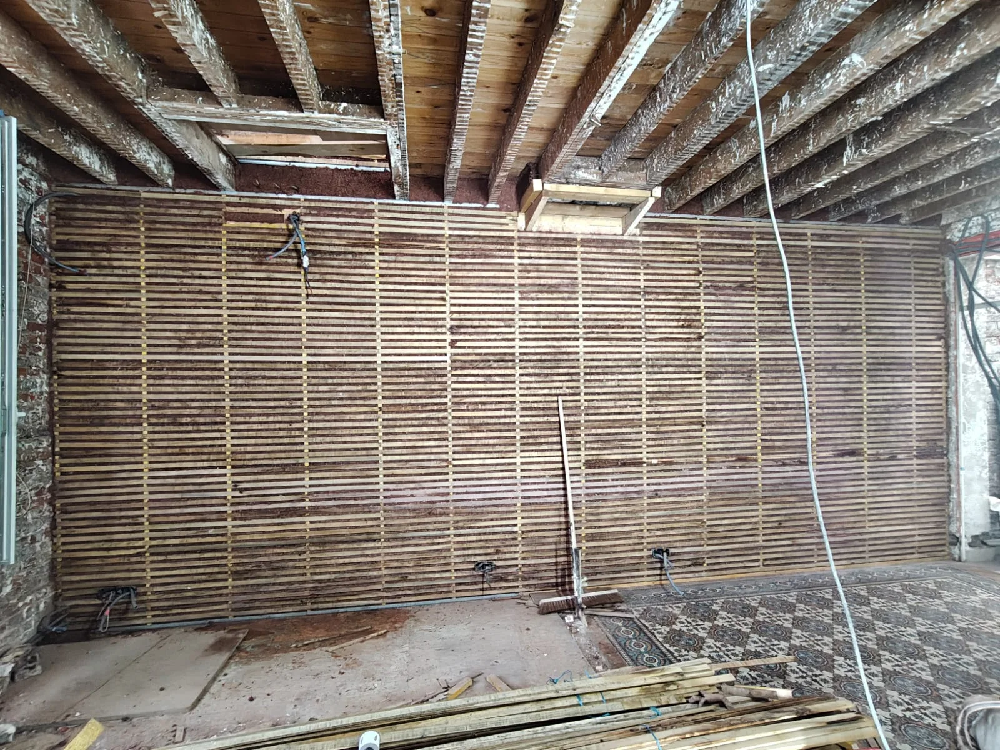
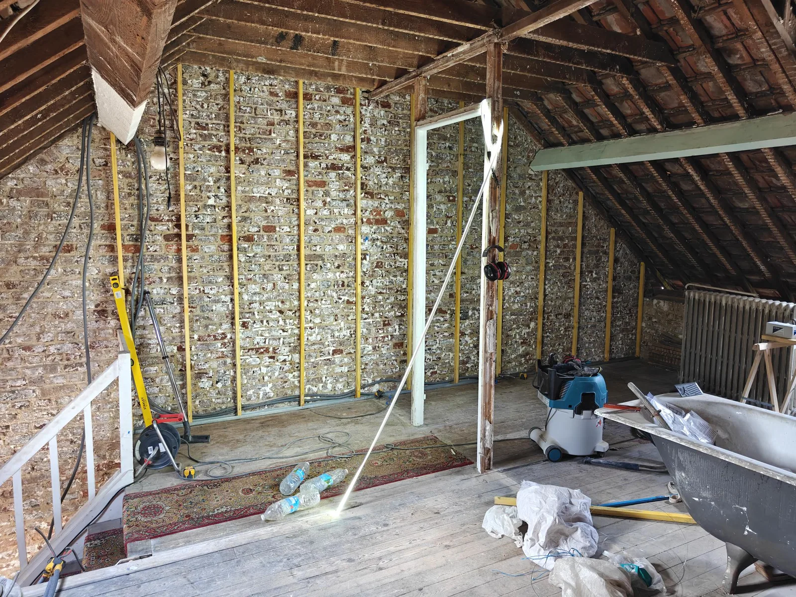
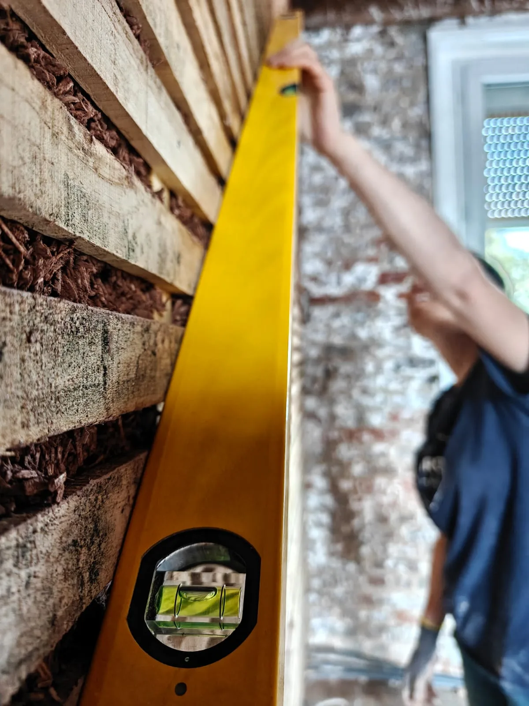
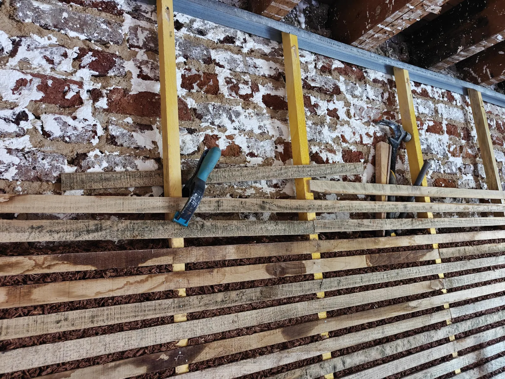
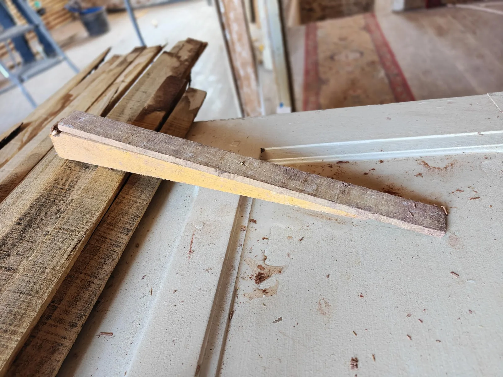
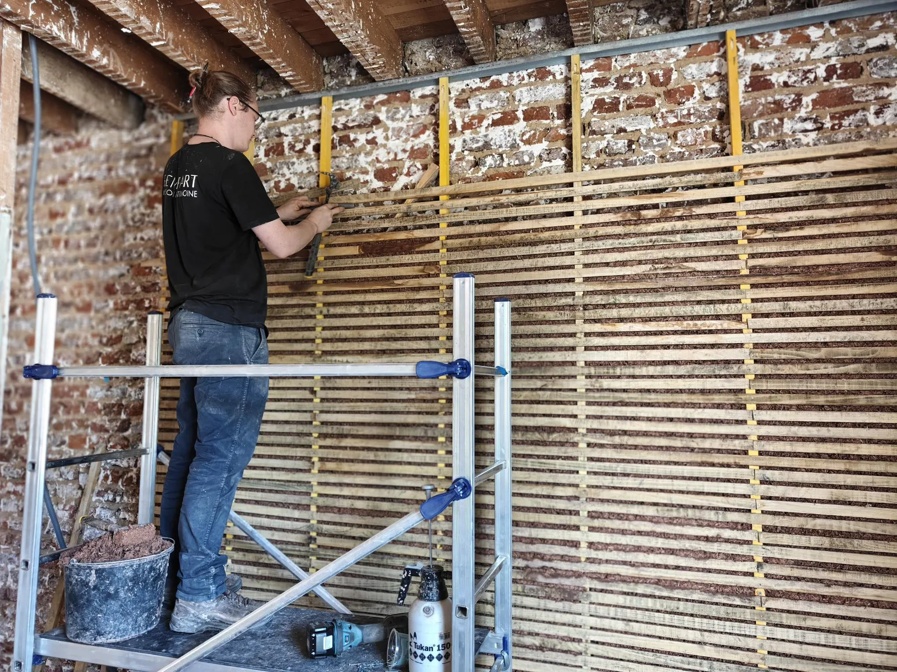
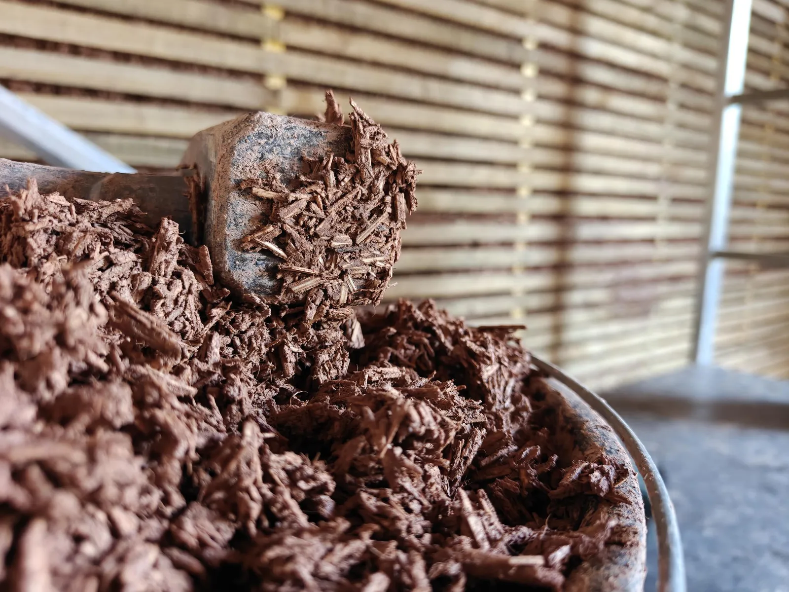
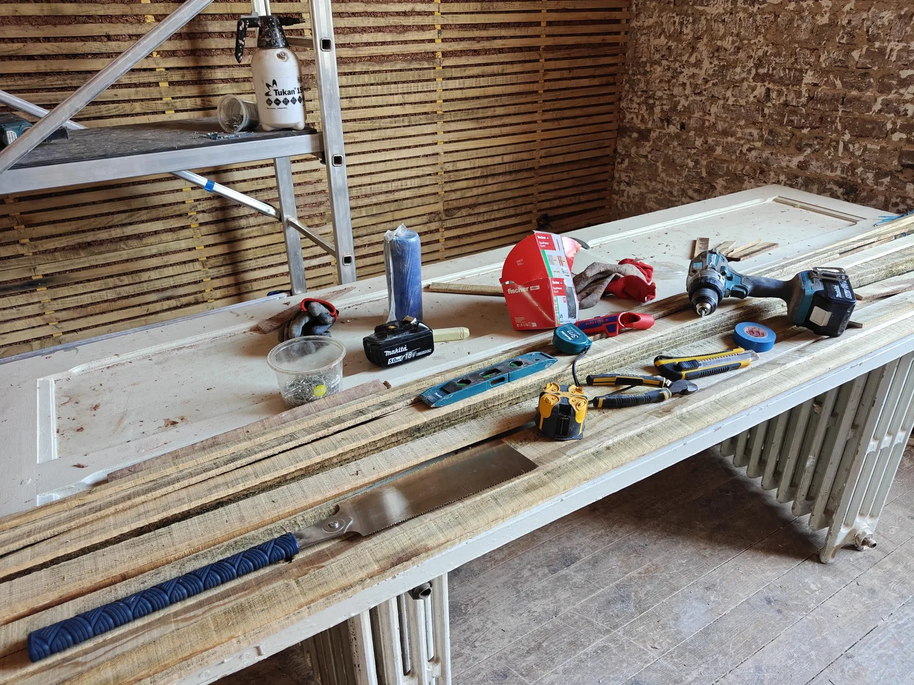
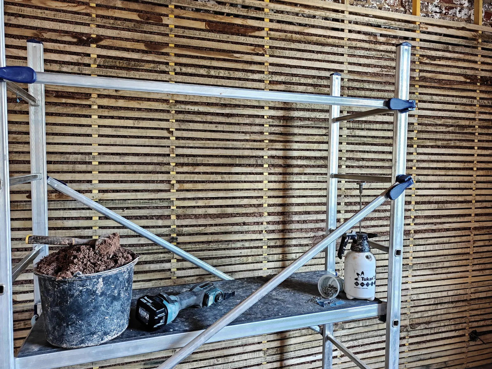

Banchage
terre-chanvre
Une isolation écologique posée à la main, avec deux matières simples : la terre comme liant, le chanvre pour la légèreté. Voici ce que nous avons appris sur le chantier, sans embellir.

Deux matières qui se complètent
La terre joue le rôle de liant : elle enrobe et tient l'ensemble. Le chanvre, lui, apporte la légèreté et le pouvoir isolant. Mélangés, ils donnent une masse souple à poser, saine une fois sèche.
La terre, le liant
Crue, sans cuisson. Elle colle les fibres et apporte la masse qui régule la température.
Le chanvre, l'isolant
La chènevotte allège le mélange et freine les échanges de chaleur. Léger à manipuler.
Une paroi qui respire
Sèche, la paroi reste saine et perspirante. Elle absorbe et restitue l'humidité de la pièce.
À 6 cm, on parle d'un doublage isolant et d'une correction thermique, pas d'une isolation complète aux normes du neuf. En rénovation de bâti ancien, c'est déjà un vrai gain de confort, honnêtement utile.
- 1Mur existant
Support maçonné, nettoyé puis humidifié avant le garnissage.
- 2Ossature bois
Tasseaux verticaux vissés au mur avec chevilles, légèrement décalés pour isoler aussi derrière. Visibles sur la vue de face.
- 3Mélange terre-chanvre
Boue de terre et fibres de chanvre, tassée sur 6 cm.
- 4Lattis horizontal
Lattes de 3 cm de large et 7 mm d'épaisseur, clouées en travers. Il reste en place.
- 5Enduit d'argile de corps
Environ 17 mm depuis l'ossature, soit 10 mm devant le lattis. Il remplit entre et devant les lattes et rattrape les irrégularités.
- 6Enduit de finition
Argile colorée d'environ 3 mm. Elle donne la couleur et remplace la peinture.
Le choix du liant change tout
Les deux liants fonctionnent. Mais la terre crue a un argument décisif : elle ne demande aucune cuisson. La chaux, elle, passe par un four à près de 900 °C, ce qui pèse lourd sur son empreinte carbone.
Du mélange au mur, geste par geste
Le mélange ressemble à une boue épaisse chargée de fibres. On a vite les mains dedans, mais ça se travaille bien et se rince en un instant. On le tasse entre le mur existant, les tasseaux verticaux de l'ossature et le lattis, qu'on cloue par tranches au fur et à mesure de la montée.
Préparation
Avant la première passe, on prépare le support une bonne fois.
- 1. Nettoyer une première fois le mur, retirer le plus gros.
- 2. Monter l'ossature, généralement en bois.
- 3. Laver le mur pour assurer l'accroche, en enlevant toutes les poussières.
Puis on monte par tranches
on remonte tranche après trancheClouer les lattes
Poser une rangée de lattes horizontales sur les tasseaux, en bas de la zone à garnir.
Mouiller le mur
Humidifier le support juste avant de garnir, pour éviter qu'il ne boive l'eau du mélange.
Garnir
Déposer le mélange terre-chanvre derrière le lattis, contre le mur existant.
Tasser
Compacter à la truelle ou à la langue de chat, une truelle très fine, pour chasser les vides.
Recommencer plus haut
Clouer la rangée suivante et remonter. La paroi se construit par bandes.
Le lattis : tassage et accroche
Des lattes de 3 cm de large et 7 mm d'épaisseur, espacées de 1 à 2 cm, posées horizontalement par paquets de 6. Le lattis n'est pas un coffrage que l'on retire : il reste en place. Il maintient le mélange pendant le séchage, environ trois semaines, puis l'ensemble se solidifie. Une fois sec, il sert d'accroche à l'argile de finition.
Argile mesurée depuis l'ossature, soit environ 10 mm devant le lattis. Il remplit entre les lattes et rattrape les zones plus ou moins lisses du mur.
Argile très fine, avec une coloration naturelle au choix. Elle apporte la couleur et l'aspect propre, et remplace les peintures, pas toujours saines.
Nos astuces pour une mise en œuvre plus efficace
Des détails qui font gagner du temps, appris en posant les 110 m². Rien de théorique, juste ce qui a marché pour nous.
Une ossature décalée du mur
Le mur n'est pas droit. On décale légèrement l'ossature pour rattraper les défauts et isoler aussi derrière les tasseaux. On la visse dans le mur avec des chevilles, en ajoutant une petite cale à la jonction mur et ossature.
Clouer au marteau, sans cloueur
Pas de pistolet à clous : on a tout fait au marteau. Derrière les tasseaux, c'était souvent vide. On glissait une cale derrière la latte, on clouait, puis on retirait la cale.
Tenir les lattes seul
Seul, des serre-joints tiennent la latte en place le temps de la fixer. Les mains restent libres pour le marteau.
Espacer les lattes vite fait
Espacement de 1 à 2 cm. Astuce : des chutes de gaine électrique ICTA, en 16 ou 20 mm, servent de gabarit d'écartement entre deux lattes.
L'électricité passe en premier
On fait l'électricité avant la terre, en gaine ICTA obligatoire, car il n'y a pas de vide dans la paroi. Ce sont ces chutes de gaine qu'on a récupérées pour caler les lattes.
Fixer les boîtiers de prises
Pour poser un boîtier à la verticale, on ajoute un tasseau horizontal entre deux tasseaux verticaux : il sert de support. À l'horizontale, les tasseaux conviennent directement, ou on cale avec deux petites pièces de bois sur les côtés.
Tasser juste ce qu'il faut
Massette de 1,5 kg, sans frapper fort : on enfonce le mélange. Le test : on passe un doigt entre les lattes. S'il s'enfonce d'environ 1 cm sans résistance, ce n'est pas assez tassé.
Avancer 3 lattes à la fois
On garnissait par tranches de 3 lattes. Sur 6 cm, c'est étroit : c'était la bonne limite pour bien glisser le mélange et le tasser correctement.
Mouiller au pulvérisateur
Un pulvérisateur à pompe manuelle suffit pour humidifier le mur avant de garnir, et éviter qu'il ne boive l'eau du mélange.
Couper les lattes simplement
À la scie japonaise en amont, ou directement sur les tasseaux une fois la latte engagée, avec un multitool. Cet outil fait le travail proprement, on le recommande vraiment.
Le mélange livré tout prêt
On a acheté le mélange terre-chanvre déjà préparé chez Saint-Samson. Pas de dosage à gérer sur place, un vrai gain de temps et de régularité.
Le chantier en images
Photographies du chantier, par Thibault Santonja Photographie. thibaultsan.com








Celleux qui ont permis ce chantier
CAUE de la Somme
Pour les conseils en architecture, urbanisme et environnement qui ont orienté le projet. caue80.fr
Les carrelages de Saint Samson la Poterie (Oise)
Terre-chanvre livré prêt à l'emploi, lattes du lattis, argile d'enduit et de finition, une solution 100 % écologique et non toxique, sans peinture. Également des carrelages et briques de terre crue pour le poêle de masse, tous produits localement. carrelages-de-st-samson.com
Magazine La Maison écologique
Pour s'informer et découvrir des techniques, une aide précieuse en amont du chantier. lamaisonecologique.com
Les amis du week-end
Pour les amis venus prêter main forte le temps d'un week-end, décontractant malgré la fatigue. Sans eux, le chantier n'aurait pas avancé aussi vite.